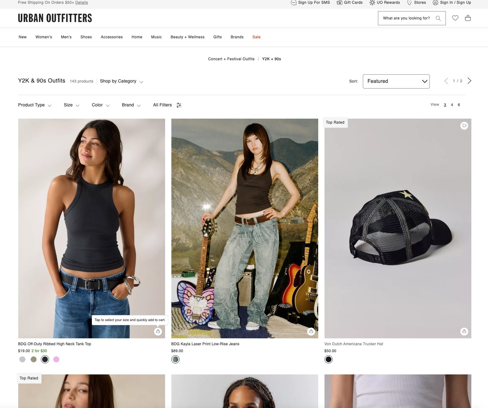
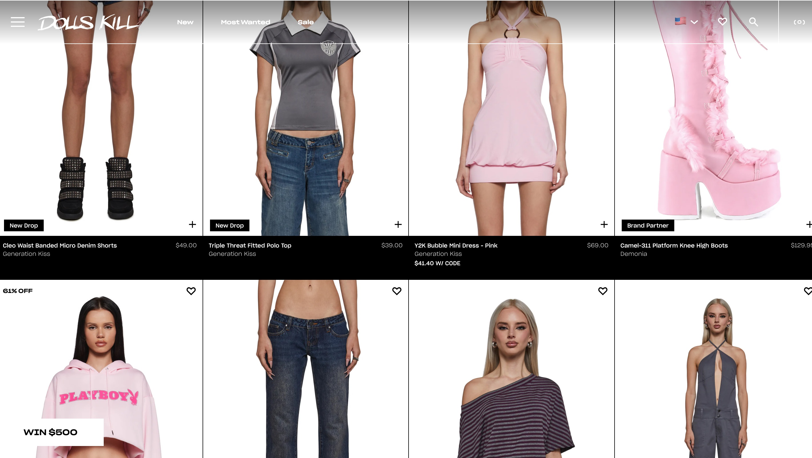
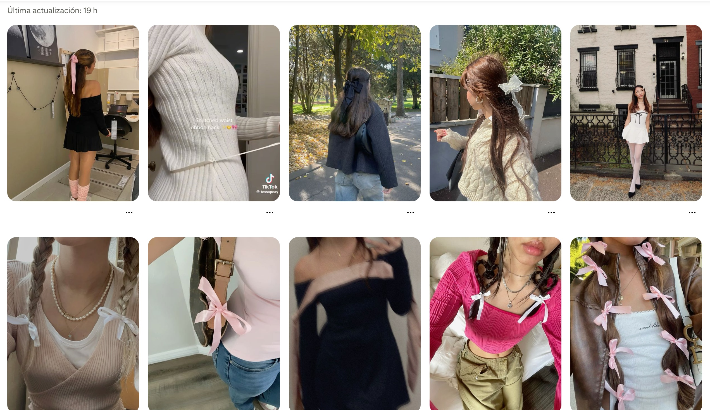
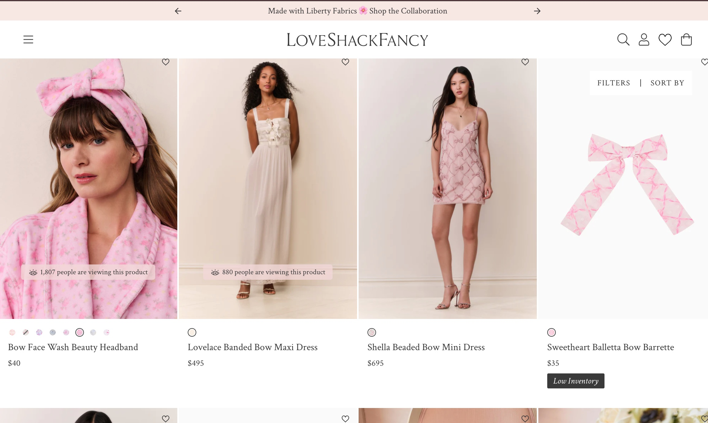
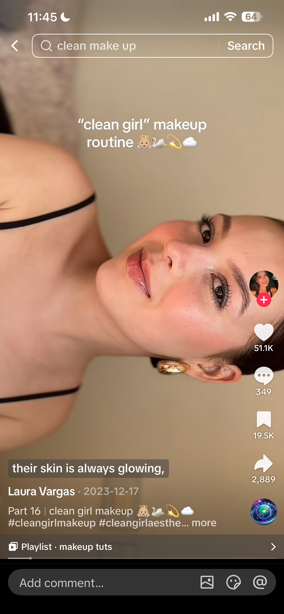
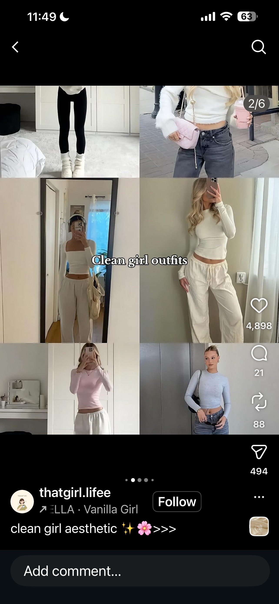
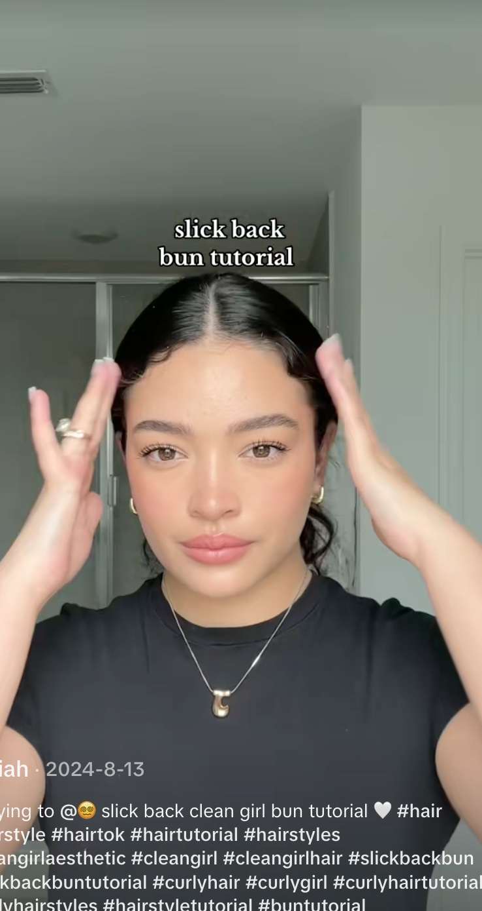
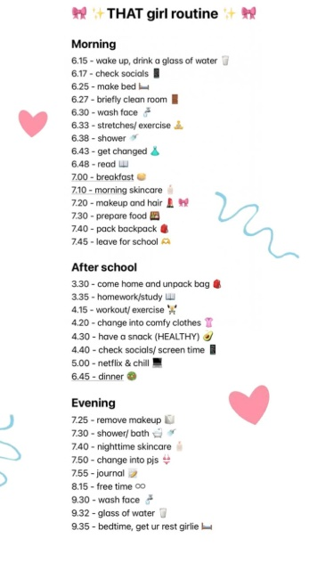

Trends
Y2K Aesthetic: Canva, Urban Outfitters, and Dolls Kill
What it is: The Y2K aesthetic brings back early 2000s fashion through bold colors, metallic elements, low-rise styles, and playful graphics.
Key features: Bright colors, shiny textures, baby tees, mini bags, chunky accessories, low-rise jeans, fitted tops, and chrome-inspired visuals.
Why it appeals to Gen Z: It feels nostalgic but also new, and TikTok makes it easy to recreate and spread quickly.
Brand connection: Canva uses Y2K-inspired visuals to feel creative and relevant to younger audiences.
Examples in practice: This trend appears in digital design, TikTok outfit videos, and retail brands like Urban Outfitters and Dolls Kill that sell early 2000s-inspired clothing.




Coquette Aesthetic: Bershka and LoveShackFancy
What it is: A feminine, soft aesthetic centered around romantic and delicate visuals.
Key features: Pink tones, bows, lace details, ribbons, ballet-inspired styling, and vintage-inspired clothing.
Why it appeals: It allows Gen Z to express a softer, more curated identity online.
Brand connection: Bershka reflects this aesthetic through styling choices and product presentation.
Examples in practice: This trend can be seen in brands like Bershka and LoveShackFancy, as well as TikTok content featuring bow styling, outfit inspiration, soft colors, and “soft girl” aesthetics.




Clean Girl Aesthetic: Rhode, Glossier, and TikTok Routines
What it is: A minimal, polished aesthetic focused on natural beauty, simplicity, and wellness.
Key features: Slick hairstyles, glowing skin, neutral outfits, minimal makeup, skincare routines, and organized lifestyle content.
Why it appeals: It feels effortless yet aspirational, aligning with wellness, self-care, and productivity trends.
Brand connection: Rhode reflects this aesthetic through clean branding, skincare-focused content, and minimal visuals.
Examples in practice: This aesthetic is widely seen in brands like Rhode and Glossier, as well as TikTok routines focused on skincare, slick-back buns, minimal makeup, and “that girl” lifestyle content.



